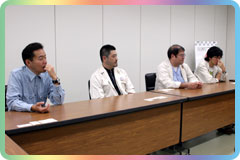
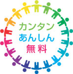
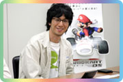
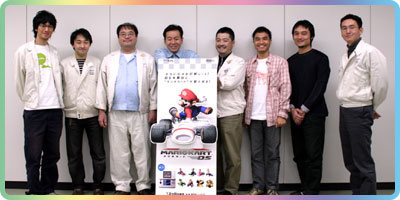

--今作の目玉は、やはりWi-Fiですか。
紺野：そうです。まず自宅でＡＤＳＬ等の回線でWi-Fi（無線）環境があれば、手軽に通信対戦ができますよ、と。または、全国のゲーム機を扱う店舗にご協力頂いて、ニンテンドーWi-Fiステーションという什器を設置するのですが、そこまで行くとすぐ通信が楽しめるようになってます。今回の柱は、『nintendogs』が狙っていた層である、ノンゲームユーザーだけでなく、元々マリオカートをプレイしていたファンの皆さんにも、幅広く楽しんで頂けるものであるということですね。
大八木：ＧＣでリリースした『マリオカート ダブルダッシュ!!』は、やろうと思えば最大８人の通信対戦も出来なくはないんです。でも、その為にはキューブ８台、ソフト８本、モニターも必要、それにそれぞれケーブルをつないで…という作業が必要なので、気軽には出来ません。それがＤＳならワイヤレス通信で簡単に遊べるよ、ということで。
紺野：これを『ダウンロードプレイ（ゲームシェアリング）』と呼んでいるのですが、とにかく同じゲームを大人数で遊ぶことが出来るというのが主眼ですね。
--ニンテンドーWi-Fiコネクションのコンセプトというのは。

紺野：岩田(代表取締役社長)がよく言うのですが、任天堂が行うサービスというのは、安心で簡単なものでなければいけないと。既存のオンラインゲームと同じであっては意味がないんです。ユーザーさんが安心して遊べて、誰もが楽しめるように。そして現在ある、オンラインに対するネガティブなイメージや敷居の高さを感じさせないこと。一般的なオンラインゲームより簡単に、例えば『チャット』が存在することで起き得るトラブルが発生しないように、といったことも大事なんですね。
--このシステムは最初からゲームに導入の予定だったんでしょうか。
和田：途中からですね。
大八木：今年の初めから実験を繰り返して、Ｅ３辺りで本格的に対応できればいいなと思ってました。
紺野：このシステムを実験する為に、仕事が終わって帰宅してから待機するんですよ。「１時に集合ねー」って言っておいて、その時間になるとみんなが回線をつないでやって来る。そこには岩田も参戦してくれたんですが、これが誰も接待プレイをしなくてですねー(笑)。誰も手を抜かなくて、全員本気ですよ！
--何となく会社員としての立場とかを考えてしまいますが…(笑)。
紺野：ええ、岩田も言ってました。「誰も接待プレイをしてくれなかった…」と(笑)。でもやっぱり熱くなりますよ。対戦中につい声を上げてしまったり、回線を通して遊んでるのに、相手の表情が浮かんだりして。こういうのって、今までになかったかなと思ってます。
春花：最初につながった瞬間って、すごく感動しますよ。僕は夜食を食べようと、カレーをレンジでチンしてる間につながりました(笑)。
紺野：私は家に帰って、家族が寝た後、お風呂から出て、ビールを飲んでる間だったりしまして。ちょっと片手間に、という気軽な感覚で接続出来るのがいいんですよね。
|
--携帯機でのレースゲームということで、操作性は大丈夫かなと思っていたのですが、スムーズでした。
佐藤：ハードが携帯機に移ったということで、操作がアナログスティックから十字ボタンになりましたね。これで逆に動かしやすくなってると思います。スティックだと、微妙な入力でもカートが左右にふられてしまうので。それと、これはレースゲームというよりも、アクションゲームという感覚で作ってました。アイテム、ジャンプといった要素が沢山あって、地面に沿って走るけど、アクション的な感覚です。レースのみだと上手いか下手かで差がつくので、僕自身はそういう風にはしたくなくて。
紺野：もちろんタッチパネルを使った操作も検討しましたが、カートの操作そのものがかなり忙しいですよね。無理にペンを使わなくても、充分に楽しいだろうということで。
和田：スタッフのなかにはマリオカートの制作経験者が多いので、作業はスムーズに進みました。自分はそれほどレースゲームが得意ではないんですが、これはガチガチのレースゲームではないので、ちょっと難しいなと感じたらそれを伝えて。自分と同じようにレースゲームが得意でない人にも、ちゃんと楽しんでもらえるように心がけました。できるだけ沢山の人に遊んでもらいたいですよね。間口は非常に広いんですが、中身はとても深いですよ。
大八木：僕は前作(マリオカート ダブルダッシュ!!)からチームに入ったのですが、歴代シリーズからいい所を取り入れつつ、新しい要素をふんだんに盛り込みました。VSやバトルでは従来にないポイント制で勝敗を決められたり、チーム戦が出来たりということも新しい部分ですし、１人用のモードも充実させました。もちろん、友人がいれば対戦して欲しいですけど、１人でも対戦が出来るようにしてあります。ＶＳやバトルでは対ＣＰＵで対戦が出来るんです。今作で新規に追加されたミッションランもあって、１人で遊んでも楽しいですよ。
--ＤＳだと容量の問題もあるので、内容の落とし込みが大変だったのでは？

佐藤：作るにあたっては、フレームレートの高い滑らかな画面で動かしたいというのがありました。ＤＳはゲームキューブと比べると性能的にはやはりきついんですが、面白い所だけを落とし込んで行きたかったんです。最初はタッチパネルを使った操作にしよう、という案がありましたが、下画面を上手く使えないかなという話になって。そこで、サブ画面として使って、メインの画面を引き立たせるように…という使い方になったんです。
竹村：今回、サブ画面はマップを見せることになりました。その際に下画面だけを見ても走れるくらいのものにしようと。あとは誰がどのアイテムを持ってるかわかるようにしました。サブ画面を利用することで、従来のマリオカートにより深みを出すということで落ち着きました。最初は必死なのであまり見ないかも知れませんが、慣れてきてちゃんと見て戦略を練ると面白くなります。
--プレイした時は全然そんな余裕がなかったんですが、見られるようになるんですね。
春花：でも、それを超えて熱くなるとやっぱり見なくなります(笑)。
紺野：ゲッソーのスミで画面が見えなくなることもありますよね。そういう時にマップ画面が活躍するわけですよ。上画面が見づらくても下画面は見えますから。ゲッソーとキラーが今回新登場のアイテムです。キラーは自分自身がキラーになって飛んでいくんですが、気持ちいいですよ。
白岩：僕は無線のプログラミングを担当したのですが、今回８人まで対戦できるということで、そこはぜひ楽しんで欲しいと思ってます。１つソフトがあれば、残りの７人はＤＳさえ持ち寄ればいいんです。ＧＢＡ版では２人がソフトあり・２人がなしだとすると、全員ヨッシーでプレイすることになりましたが、ＤＳ版ではソフトを持ってる人ならキャラやカートを色々選んで遊べるようになってます。持っていない人はヘイホーしか選べないんですけど。
紺野：そういうことなので、もし対戦してヘイホー以外のキャラを使ったりしたいと思ったら、ぜひソフトを買って頂いて(笑)。
白岩：あとはレースが滞らず、滑らかに走れるようにという部分でかなり頑張りました。１人で遊ぶ時も、対戦の時も、同じような動作になるようにということですね。
|
--絵に関してはいかがでしょう。
春花：ＤＳの特性として、画面が２つ・タッチパネルといった要素がありますが、無線でつながるマルチプレイが今まで以上に重要だと思いました。なので、対戦の邪魔にならないように、途中で処理が重くなって、プレイする人の気分が削がれないようにというのをプログラマーと相談しまして。ただ、僕自身がマリオタイトルに関わるのが(NINTENDO)64以来だったので、ちょっと難しく感じました。どこまでマリオの世界観をキープして、マリオカートならではというのをデザインに入れていくか。なんとか結果的に今までのシリーズにないものが出せたかなと。
--例えばなんでしょう？
春花：カート自体も、「まさか！」と思うようなものが出てきます。どの程度、『ちょっぴりはみ出すか』を色々考えたんですが、基本的にマリオが車に乗っているという絵は同じなわけで、そのなかで「ちょっと違うね」と言われたかったので。頑張ってプレイすると「まさか！」が出てきますので、お楽しみに。
竹村：コースに関しては、前作と比べて数が倍になっています。半分は移植で、半分は新作コースです。バリエーションとしてはシリーズの空気を踏襲していますが、GC版より多少大人っぽくというか、あまりに子供っぽくなりすぎないよう心がけました。
紺野：宮本(専務取締役)がよく言うのですが、「マリオの世界だからといってあまりコドモコドモさせないように」というのがあって、やたら木や雲に目がついてたりするのは今回はひかえめにしてみました。コラボ企画で他社の方が「マリオの世界を大事に作りました」と持ってきて下さるものにも、かなり可愛い感じの絵が多いんです。でも、そうではないよと。
春花：今回の場合は、コースの雰囲気によって、上手く作り分けようということで。マリオ作品ってなんでも目がついてるようなイメージはありませんか？（笑）。
--ついてます？
紺野：わりとなんでもついてるんですよ、これが…(笑)。
--今回のサウンドはいかがでしょう。
疋野：これはレースゲームですが、ありがちなストイックなものではなく、パーティゲームとしても見ています。なので、サウンド演出もそれを強く意識したものになっています。さっきも出ましたが、とっさに声を上げたりするのってパーティゲームっぽいですよね。とはいえレースゲームではあるので、スピード感とか白熱した感じなんかもとても大事で。そういう面では、ＤＳの特性ってサウンドからすると大変なんです。音が重なると飽和してしまい、聴いている方がわからなくなるので、音数を整理しつつ適切に配置するというのを考えました。
--見えない苦労がたくさんあるんですね。
疋野：でも、コースは多彩ですよね。だからそれをサウンドにも活かさない手はないと思って、コースごとに効果音も変えてます。例えばピンボール台のコースでは、あたかもピンボールをプレイしているかのようにピロピロと電子音が鳴ったりするんです。ぜひ、コースの特色を味わいながらプレイして欲しいですね。空間的な広がりが音で感じられると思いますよ。ステレオとサラウンドでも音の聞こえ方が違うので、ぜひ試してみて下さい。
紺野：情報開発本部としてはずっとコンソール機をメインに制作してきたわけですが、今回ＤＳをやろうということでスタートしまして。携帯機でのソフト作りは、スタッフ内でも初めてという人間が多いんですね。ＤＳは64で培ってきた技術が活かせるほどの内容なんですが、メモリにも限界がありますし、サウンドには本当に泣いてもらった部分もあります。「今回ヨロシク！」と。
--日本よりも先に北米と欧州で発売していますが、なにかありますか？
紺野：アメリカではマクドナルドと提携しまして、最終的には全店にニンテンドーWi-Fiコネクションを設置される予定と聞いています。これでかなり遊びが広がると思います。通信対戦では国内の誰か、世界の誰か、ライバル、友達という選択がありますが、12ケタのフレンドコードというのを交換すれば、離れている特定の友達とも遊べますし。
和田：今回、エンブレムを自作で描けるので、国旗を描いてカートに貼ると、世界の誰かと遊んでいる気分が満喫できますよ。
--では、メッセージをお願いします。
疋野：ニンテンドーWi-Fiコネクションは初めての試みになりますが、本当に面白いものなので、みなさんで楽しんで下さい。
竹村：海外の方との対戦は楽しいので、ぜひプレイして下さい。
春花：対戦がとても楽しいゲームになったので、色々な人と戦って腕を磨いて下さい。ニンテンドーWi-Fiコネクションで初めて人とつながった瞬間は、とっても楽しくて感動しますよ。
白岩：沢山の友達と遊ぶと、リストに登録されていきます。リストには60人まで登録できるので、ぜひリストを溜めて遊んで下さい。
佐藤：過去のシリーズの良い所を取り込んでいるので、ぜひ遊んで下さい。
大八木：対戦も１人用も面白いです。ソフトを持っていなくても友達のソフトでダウンロードプレイが出来ますし、それでこれは面白い！と思ったら買って遊んで下さいね。
和田："だるま"のエンブレムが貼ってあるカートがあったら自分かも知れませんので、お手柔らかにお願いします。
紺野：『マリオカートＤＳ』はとても良い作品に仕上がりました。次に向けても頑張ります！
--みなさんありがとうございました！

|
|